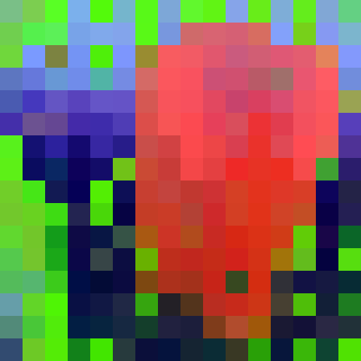

How AI Models
See the World
A deep dive into self-supervised vision model representations
latent-inspector | Rust + ONNX Runtime
github.com/AbdelStark/latent-inspector
Act I
Same Image.
Four Models.
Four Realities.
The Input

One photograph. 224 x 224 pixels. Three color channels. Every model sees the same pixels.
What each model sees
Top 3 PCA components mapped to RGB



Act II
Self-Supervised Learning
Learning to see without being told what to look at
The bottleneck
Supervised
Human labels for every image
ImageNet: 14M images, years of work
Millions of dollars
Self-Supervised
No labels needed
The internet: billions of images
Zero annotation cost
The trick: invent a task that requires no labels
but forces the model to understand the image's structure.
Different questions, different understanding
Self-distillation: "Two views of the same image. Produce the same representation for both."
Latent prediction: "I masked part of the image. Predict the representation of the hidden part."
Video prediction: "Predict the representation of the next frame."
Multi-teacher distillation: "Match all these specialist teachers simultaneously."
That pressure sculpts the geometry of the representation.
The Cast
Four Models
DINOv2 ViT-L/14 · 304M · 1024-dim
Self-distillation. Student matches a slowly-evolving teacher across augmented views.
The model learns that objects are the things that stay stable when everything else changes.
Meta FAIR · Oquab et al., 2023
I-JEPA ViT-H/14 · 632M · 1280-dim
Masks large image regions. Predicts the representation of missing patches, not pixels.
Predicts meaning, not appearance. Every patch must encode unique spatial context.
Meta FAIR · Assran et al., 2023 · Yann LeCun's JEPA
V-JEPA 2 ViT-L/16 · 304M · 1024-dim
Video prediction in latent space. Predicts future frames, not pixels.
Even on a static photo, carries an implicit prior about motion and time.
Meta FAIR · Bardes et al., 2025
EUPE ViT-B/16 · 86M · 768-dim
Distilled from DINOv2 + depth estimators + segmenters into one compact encoder.
Decent at everything simultaneously. Extreme compression.
Meta FAIR · Zhu et al., 2026
Same backbone. Same image. Same patches.
The only difference is the training objective.
Let's measure how that single choice
reshapes the entire geometry of the representation.
Act III
The Instrument
cargo install latent-inspectorRust single binary, no Python env
ONNX Runtime real inference, verified models
Validated SHA-256 checksums, golden references
compare cross-model metrics + matrices
inspect single-model deep diagnostics
tui interactive terminal dashboard
validate model integrity verification
Act IV
What is a Representation?
From pixels to vectors
Image 224 x 224 px, 3 channels
↓ split into 14 x 14 pixel patches
256 patches
↓ linear projection to 1024 dimensions
256 vectors x 1024 numbers
↓ 24 Transformer layers (self-attention + FFN)
256 refined vectors = the representation
262,144 floating-point numbers. That's what we analyze.
PCA — Principal Component Analysis
1024 dimensions is too many to visualize. PCA finds the directions of maximum variation.
Map the top 3 directions to Red, Green, Blue channels.
Same-colored regions = the model considers those patches similar.
Colors are relative to each model. You cannot compare "red" across models.
Act V
How Each Model Sees
DINOv2
Emergent Segmentation
Sharp boundaries. The elephant body clusters in one color. Background in another.
Self-distillation forces consistency across augmented views. The most consistent thing across crops, rotations, and color shifts is the object itself.
I-JEPA
Fine-Grained Detail
More colors. Trunk, legs, ears each distinct. Background has spatial structure.
The prediction objective forces each patch to be unique. If adjacent patches had identical representations, the model couldn't predict which one is missing.
V-JEPA 2
Maximum Dimensional Richness
The most colorful projection. The most directions in representation space.
Trained on video, it encodes spatial structure plus temporal priors. More factors to encode = more dimensions used.
EUPE
Smooth Compression
Smooth gradients everywhere. No sharp boundaries. No segmentation.
Optimizing for every task simultaneously produces a representation so compressed that the spatial structure DINOv2 develops isn't there.
Let's quantify exactly how different.
Act VI
Measuring Representations
Effective Rank
How many dimensions the model actually uses. Like a 1024-channel mixing board — how many channels carry signal?
| Model | Effective Rank | Of |
|---|---|---|
| DINOv2 | 60 | 1024 |
| I-JEPA | 44 | 1280 |
| V-JEPA 2 | 64 | 1024 |
| EUPE | 17 | 768 |
V-JEPA 2: broadest spread. EUPE: most concentrated. 17 dimensions carry nearly all the signal.
Patch Entropy
How differentiated are the patches? High = every patch says something unique.
| Model | Entropy | |
|---|---|---|
| DINOv2 | 2.52 | |
| I-JEPA | 2.89 | every patch is unique |
| V-JEPA 2 | 2.36 | one coherent scene |
| EUPE | 2.84 |
I-JEPA must differentiate to predict. V-JEPA 2 sees one coherent scene — temporal coherence smooths spatial diversity.
Act VII
Isotropy
Do patches point in diverse directions — or all the same way?
Picture a room of 256 compasses.
1.0 = every compass points a different direction. 0.0 = they all point north.
Nearly zero.
Multi-teacher distillation collapsed directional diversity into one compact universal feature direction.
The differences between patches are tiny variations around that one direction.
Top-10 variance: 88.8%
10 components capture almost everything
Components @ 90%: 12
vs 38 for V-JEPA 2
Act VIII
Cross-Model Similarity
CKA — Centered Kernel Alignment
What CKA measures
Do two models organize their representations in similar geometric structures?
Like two restaurant critics: do they agree on which restaurants are similar to each other?
1.000 = identical geometry 0.000 = completely unrelated
The CKA Matrix
| DINOv2 | I-JEPA | V-JEPA 2 | EUPE | |
|---|---|---|---|---|
| DINOv2 | 1.000 | 0.329 | 0.358 | 0.044 |
| I-JEPA | 0.329 | 1.000 | 0.275 | 0.000 |
| V-JEPA 2 | 0.358 | 0.275 | 1.000 | 0.038 |
| EUPE | 0.044 | 0.000 | 0.038 | 1.000 |
EUPE ↔ I-JEPA: zero. Not low. Zero. No measurable structural similarity.
Three findings
1. DINOv2 ↔ V-JEPA 2 = 0.358 — highest pair
Same ViT-L architecture constrains the geometry. Architecture matters more than expected.
2. I-JEPA ↔ V-JEPA 2 = 0.275 — JEPA "family"
Same framework, but image vs video. Modality matters more than paradigm.
3. EUPE ↔ anything ≈ 0 — the alien
Multi-teacher distillation created something geometrically alien to every single-objective model.
The Distillation Paradox
EUPE was trained on DINOv2. DINOv2 was its teacher.
CKA between them: 0.044
The student absorbed the knowledge
but completely reorganized the filing system.
k-NN Overlap — Local Neighborhood Agreement
For each patch, find its 10 nearest neighbors in each model. What fraction do they share?
| DINOv2 | I-JEPA | V-JEPA 2 | EUPE | |
|---|---|---|---|---|
| DINOv2 | 1.000 | 0.278 | 0.205 | 0.132 |
| I-JEPA | 0.278 | 1.000 | 0.202 | 0.100 |
| V-JEPA 2 | 0.205 | 0.202 | 1.000 | 0.089 |
| EUPE | 0.132 | 0.100 | 0.089 | 1.000 |
27.8% DINOv2 ↔ I-JEPA — highest
8.9% EUPE ↔ V-JEPA 2 — lowest
Act IX
The Toolkit
Single Model Deep-Dive
latent-inspector inspect elephant.jpg --model dinov2-vit-l14Full diagnostics: PCA variance spectrum, patch norm distributions,
CLS token analysis, all metrics in one view.
Interactive Terminal UI
latent-inspector tui elephant.jpg \
-m dinov2-vit-l14,ijepa-vit-h14,vjepa2-vitl-fpc2-256,eupe-vit-b16Dashboard · Inspector · Compare · Spectrum
All interactive. All in the terminal.
Validation Pipeline
latent-inspector validate --model dinov2-vit-l14 --model ijepa-vit-h14 \
--model vjepa2-vitl-fpc2-256 --model eupe-vit-b16Preprocessing contracts. Golden references. Zero drift.
Not vibes — verifiable measurements.
Act X
What Shapes Perception?
The hierarchy of forces
1 Training objective — the dominant force
2 Architecture — the container that constrains geometry
3 Modality — image vs video matters more than paradigm
4 Model size — the compression budget
Different World Models.
Different Ways of Seeing.
If you're building a system that needs to understand the physical world — a robot, an autonomous vehicle, a world model — the question isn't just "which model gets the best accuracy."
What kind of perception does this model have?
OPEN SOURCE · RUST · RUNS IN SECONDS
latent-inspector
cargo install latent-inspectorgithub.com/AbdelStark/latent-inspector